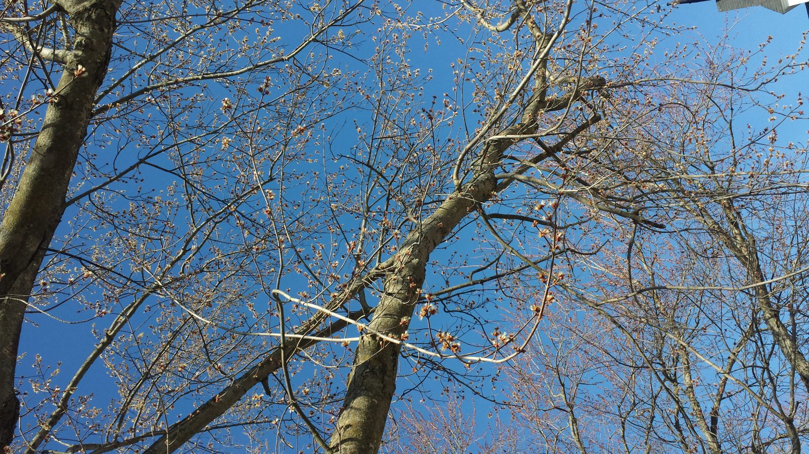

Un peu de théorie
Comprendre la phénologie des arbres et son importance pour l'étude du changement climatique
Comprendre la phénologie des arbres et son importance pour l'étude du changement climatique
nom féminin
Étude scientifique des variations (durée, époque, etc.) que les divers climats font subir à la floraison et à la feuillaison des végétaux.
- Larousse Merriam-Webster
Pour ce projet, nous mettons l'emphase sur l'observation des arbres. Au printemps, nous notons à quelle date une espèce d'arbre commence à fleurir, celle à laquelle les bourgeons de feuilles s'ouvrent, et celle où les feuilles adultes sont complètement ouvertes. À l'automne, nous observons la chute des feuilles. Nous estimons aussi les pourcentages de feuilles colorées et la proportion de feuilles encore sur les branches quelques fois à chaque semaine.

Érable rouge en pleine floraison, Lennoxville 23 avril 2018
La phénologie, ou le suivi des phénomènes biologiques dans le temps, est un domaine de recherche important car il permet de détecter l'impact des changements climatiques sur les organismes vivants. Par exemple, des données recueillies dans le nord-est des États Unis montrent qu'en 2001, le lilas fleurissait 9 jours plus tôt qu'en 1965 (1). À Concord au Massachusetts, les fleurs printanières fleurissaient en moyenne 7 jours plus tôt en 2004-2006 qu'entre 1850 et 1900 (2).
Comment les récents changements climatiques ont-ils affecté les arbres de notre région? Nous l'ignorons car les données phénologiques en Estrie sont très rares. Pour cette raison, nous avons besoin de vous, scientifiques citoyens, pour recueillir des observations phénologiques. Le but du projet est de commencer à recueillir des données qui seront utilisées à l'avenir pour détecter les impacts du réchauffement climatique sur nos arbres.
Maintenant que vous comprenez l'importance de ces observations, il est temps de passer à l'action !